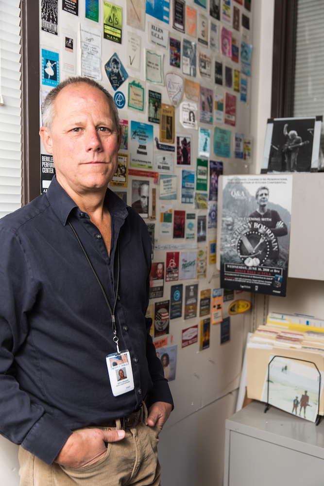

Photo: Austin Yu/Daily Bruin Senior Staff
Photo: Austin Yu/Daily Bruin Senior Staff
John Henson worked his way up from grunt to student concert director, booking Neil Young, Tom Petty and Frank Zappa as an undergraduate at UC Santa Barbara
Acknowledging his own high school garage band experience, Henson said he never took himself as a musician seriously, but instead discovered a behind-the-scenes love for music.
“I realized that I loved getting involved in concerts,” Henson said. “And then I realized what I liked the best was the campus environment.”
In 1985, Henson was hired as the adviser to the Student Committee for the Arts at UCLA. From director of patron services to director of operations to now rental events manager, Henson is still with Royce Hall more than 30 years later.
Henson began to coordinate concerts while acting as adviser, and now he organizes about 50 external events in Royce Hall each year, from Coldplay’s “Ghost Stories” in 2014 to the Farmers Insurance Group’s upcoming company meeting.
After so many years with Royce Hall, Henson said it’s hard for him to choose a favorite night.
The time when 2001’s “The Harry Smith Project” – joining Elvis Costello, Beck and many more – extended from one to two nights. Or when Elton John made a guest appearance at a Rufus Wainwright benefit concert in 2012 and gave him a kiss. Or a few months ago, when Henson was called backstage to take a picture with Oprah Winfrey during a soul-session recording.
“There have been so many,” said Henson, smiling.
But for him, Henson said celebrity moments fall second to his love of Royce. In the 1990s, Henson said the pop concert industry underwent a massive transformation from independent promoters to huge corporations, like Live Nation and the Anschutz Entertainment Group. However, at Royce, the staff gets a near-extinct privilege: independence.

Photo: Austin Yu/Daily Bruin Senior Staff
“What Kristy Edmunds has – to be an artistic director – is becoming a rare breed,” Henson said. “To be a campus presenter and be able to book entirely based on her artistic aesthetic makes it a special place to work.”
Henson said rental management is ultimately service-related. From mom-and-pop first-timers to the American Idol crew, Henson said his goal remains unchanging: to pull together an event to be proud of.
“I want everybody that comes here to have a great experience,” Henson said.
Unlike recorded music, a live performance requires months of planning followed by four to five days of intense preparation – all leading up to one moment.
Henson said this type of environment demands a level of camaraderie, teamwork and trust from the entire staff. After 30 years at Royce, Henson said he cannot imagine retiring anywhere else – these people have become his family.
“You don’t get another chance for another take.”